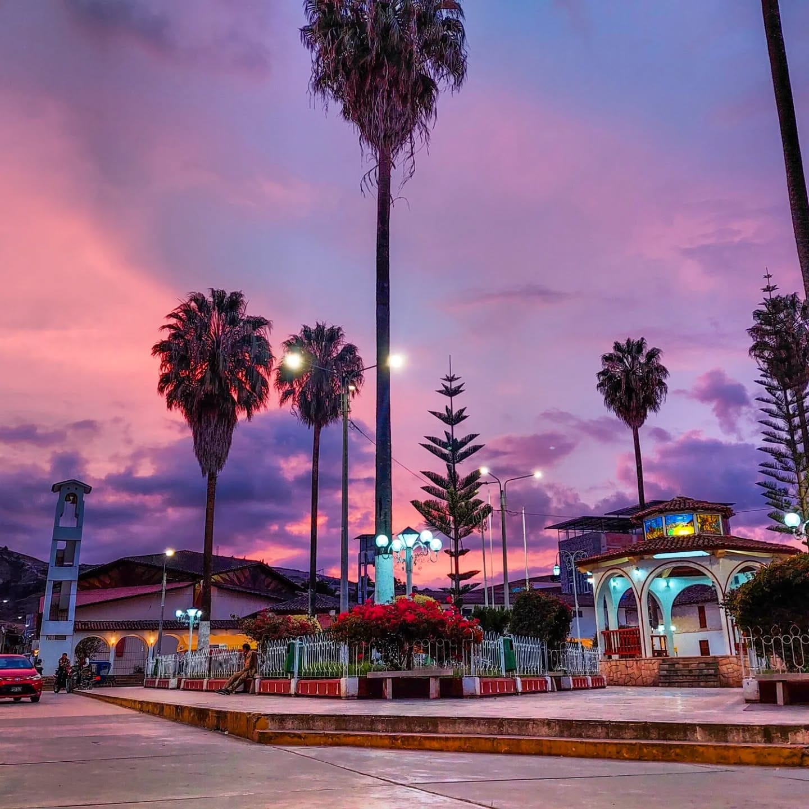

Tierra de la cordialidad Santa Cruz - Cajamarca - Perú
Descubre los Tesoros Naturales y Culturales del Norte Peruano
La provincia de Santa Cruz, ubicada en el departamento de Cajamarca, es un destino extraordinario que combina riqueza natural, patrimonio arqueológico y tradiciones ancestrales. Con paisajes que van desde aguas termales curativas hasta bosques petrificados únicos, este territorio ofrece experiencias inolvidables para los amantes del turismo de naturaleza y cultura.
Aguas Termales de Chancay Baños
Recurso termomedicinal excepcional ubicado a 2,200 msnm, famoso por sus propiedades curativas. Estas aguas cloro-sulfurosas emergen naturalmente del subsuelo del cerro Chancay Baños, ofreciendo un oasis de relajación y bienestar en medio de paisajes montañosos espectaculares. Para llegar a los baños termales, se puede tomar un carro desde la ciudad de Santa Cruz, que es la capital de la provincia. El viaje desde Santa Cruz hasta Chancay Baños dura aproximadamente una hora y 20 km desde Santa Cruz y el costo del pasaje es de alrededor de 5 soles.
Grutas de Ushcupishgo de Ninabamba
Las Grutas de Ushcupishgo están ubicadas en el distrito de Ninabamba, provincia de Santa Cruz, Cajamarca, Perú. Se llama GRUTAS DE USHCUPISHGO, palabra quechua cuyo significado es hueco de pájaro, queda ubicada en el distrito de Ninabamba, provincia de Santa Cruz, Cajamarca. Son tres grutas maravillosas. Hay mucho por descubrir, les invito a conocer, se quedarán maravilladosSe encuentran a unos 15 minutos a pie desde la plaza principal de Ninabamba, siguiendo un camino que también lleva a la Laguna de San Lucía. Son conocidas por sus aguas turquesas y su nombre proviene del quechua, significando "hueco de pájaro". También se les conoce como Gruta de Polulo. Se llama GRUTAS DE USHCUPISHGO, palabra quechua cuyo significado es hueco de pájaro, queda ubicada en el distrito de Ninabamba, provincia de Santa Cruz, Cajamarca. Son tres grutas maravillosas. Hay mucho por descubrir, les invito a conocer. La distancia sde Santa Cruz a Ninabamba es de 45 km.
Bosque Petrificado de Piedra Chamana
El Bosque Petrificado Piedra Chamana está ubicado en los Andes del norte del Perú, cerca del pueblo de Sexi. Troncos de árboles fosilizados revelan los secretos de un bosque tropical que crecía aquí hace 39 millones de años. Los visitantes pueden caminar entre los restos del bosque antiguo y disfrutar de una vista panorámica de los Andes. La comunidad de Sexi invita a los visitantes a conocer el bosque petrificado y experimentar sus tradiciones culturales. El distrito tiene una extensión de 192,87 kilómetros cuadrados,La capital de este distrito es la localidad de Sexi ubicada a 2 495 m s. n. m. La distancia de Santa Cruz a Sexi es de 111 km.
El Tragadero de Chancay Ninabamba
Las cuevas y la red subterránea del río Chancay han sido objeto de exploraciones científicas desde el siglo XIX. En 1868, Antonio Raimondi localizó el tragadero y sugirió su conexión con la resurgencia del río. La entrada principal mide 11 metros de alto por 8 metros de ancho, y tras 70 metros la progresión se vuelve peligrosa. Es un lugar ideal para los amantes de la espeleología y la aventura. La distancia sde Santa Cruz a Ninabamba es de 45 km.
Las Ventanillas de la Barriada
Las Ventanillas de la Barriada se refiere a un sitio arqueológico ubicado en el caserío de Barriada Nueva, en la provincia de Santa Cruz, departamento de Cajamarca, Perú. Estas "ventanillas" son nichos funerarios excavados en formaciones rocosas, similares a las más conocidas Ventanillas de Otuzco, pero en menor escala. El sitio arqueológico también contiene restos de cerámica, huesos y textiles, lo que sugiere su uso como cementerio. Se encuentra en el cerro Cuchicirca, en el caserío Barriada Nueva, provincia de Santa Cruz, departamento de Cajamarca. Características: Son construcciones de piedra y barro, con nichos funerarios excavados en la roca. Hallazgos: Se han encontrado fragmentos de cerámica, restos óseos y pedazos de textiles, lo que indica su uso como cementerio. Importancia: Aunque menos extenso que las Ventanillas de Otuzco, este sitio arqueológico es un testimonio importante de las prácticas funerarias de la cultura local. Conservación: Las Ventanillas de la Barriada están bajo la protección del Instituto Nacional de Cultura, según Atlas de Cajamarca.
Mirador Cotorumi de Santa Cruz
El Mirador Cotorumi, ubicado en Santa Cruz, Cajamarca, es un destino que promete una conexión profunda con la naturaleza y la tranquilidad andina. Conocido por su impresionante vista panorámica, este lugar ofrece un espectáculo donde el cielo parece abrazar las majestuosas montañas de los Andes. Es el sitio ideal para quienes buscan respirar aire puro y desconectarse, sintiendo el "corazón de Cajamarca latiendo fuerte". Las fotografías de stock y comentarios de visitantes resaltan los paisajes naturales que se pueden apreciar desde este mirador, lo que lo convierte en un punto de visita imperdible para los amantes de la fotografía y la belleza escénica. Aunque no se menciona en detalle si cuenta con infraestructura turística específica como senderos acondicionados o servicios, su esencia radica en la oportunidad de disfrutar de una vista agradable y hermosa, sumergiéndose en la serenidad del entorno cajamarquino. La distancia al mirador cotorumi es de 1.5 km desde la plaza de armas de Santa Cruz, y se puede llegar caminando o en carro.

Cerro tren de Santa Cruz
Se encuentra en el caserío Bebedero, en la colina de este cerro encontramos piedras talladas de gran proporción, restos de cerámica, evidencias que fue habitado en épocas remotas. En los farallones del cerro, se observa la formación de un reloj solar bien definido en alto relieve, marcando exactamente las 11 am. Situado a unos 20 m de altura de la base del cerro.

Bosque nublado de Udima
El Refugio de Vida Silvestre Bosques Nublados de Udima es un área natural protegida de gran valor en Perú, establecida el 1 de febrero de 2010. Se extiende por 12,183.20 hectáreas entre los departamentos de Cajamarca (específicamente el distrito de Catache, provincia de Santa Cruz) y Lambayeque. Este santuario natural es crucial por su rica biodiversidad, albergando una vasta variedad de flora y fauna, incluyendo especies endémicas, raras y amenazadas; es un refugio vital para el oso de anteojos y diversos felinos como el puma, el tigrillo, el gato montés y el yaguarundí. Además de su riqueza biológica, Udima es una fuente hídrica fundamental, ya que sus bosques nublados capturan el agua de las nubes en movimiento a través de un fenómeno conocido como "lluvia horizontal", abasteciendo las cuencas de los ríos Chancay y Zaña, y suministrando agua a poblaciones costeras como Chiclayo. El área presenta una fascinante secuencia de ecosistemas, que van desde el bosque seco de montaña en las zonas bajas, pasando por los bosques nublados en la parte media, hasta los pajonales o jalcas en las elevaciones más altas. A su valor natural se suma un importante legado arqueológico, con el sitio de Poro Poro, que contiene restos de arquitectura monumental contemporánea a Chavín de Huántar (alrededor del 500 a.C.), incluyendo una plaza cuadrangular y altares dedicados al culto al agua.

Complejo arqueológico de Poro Poro
El Complejo Arqueológico de Poro Poro es un sitio de gran relevancia histórica y cultural ubicado en el departamento de Cajamarca, provincia de Santa Cruz, específicamente en el distrito de Catache, dentro del Refugio de Vida Silvestre Bosques Nublados de Udima. Este complejo, descubierto en 1958, es conocido por su arte rupestre, que incluye pinturas y petroglifos del Periodo Formativo. Se han encontrado tallas elaboradas con técnicas de percusión y raspado en farallones y altares de roca. Un ejemplo notable es el "Altar lítico de los pozos", que sugiere un uso ritualista y de manejo simbólico de los recursos hídricos, posiblemente funcionando como espejos de agua para observar los ciclos estacionales y movimientos astrales. Las investigaciones arqueológicas, incluyendo las del Dr. Walter Alva, han revelado la presencia de arquitectura monumental contemporánea a Chavín de Huántar, datada alrededor del 500 a.C. Se ha identificado una plaza cuadrangular similar a la de Chavín y altares dedicados al culto al agua. El complejo abarca un área aproximada de 8 km² y se asienta sobre pequeñas planicies y colinas que descienden hacia el río. A pesar de su importancia, aún requiere de mayores estudios y una planificación de gestión turística para desarrollar plenamente su potencial. Es un tesoro arqueológico que ofrece una visión profunda de las antiguas culturas prehispánicas del norte peruano y su relación con el entorno natural.